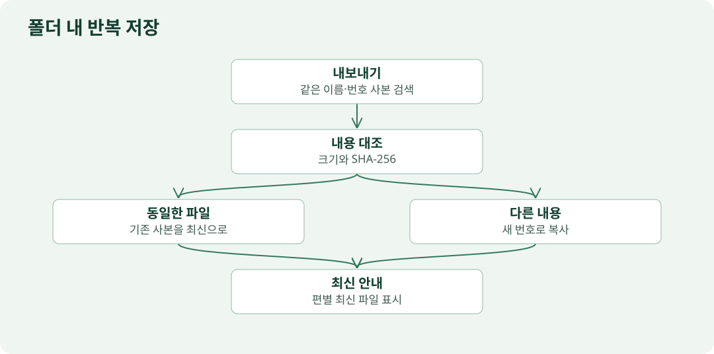

BLOG LAB STUDIO · 개발 진행 중10. 회의록
설계 결정 기록
썸네일 제작 기준은 사용자가 승인한 예시로 유지했다. 원본 폰트가 없는 상태에서 앱이 자체 템플릿으로 글꼴을 재현하는 방식은 중단하고, 예시 비교와 선택을 앱의 역할로 정했다.
원본 자료 보관 비용을 줄이기 위해 PC 등록은 경로 참조, 회차 전달은 축소 사본으로 구분했다. 하드 링크를 사용할 수 있는 환경에서는 캐시와 회차 사본이 데이터를 공유한다.
자동화 검수와 사본 마이그레이션을 마친 뒤 변경 사항을 통합했다. 실제 OneDrive 폴더 이동과 운영 데이터 첫 실행은 이후 확인하기로 했다. 이 기록은 개발 이력과 인수인계에 남은 결정이다.

폴더 내 반복 저장